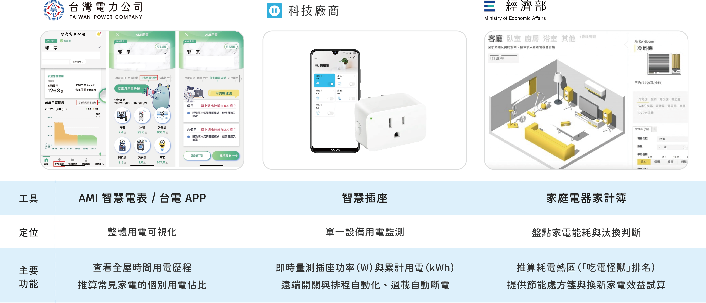
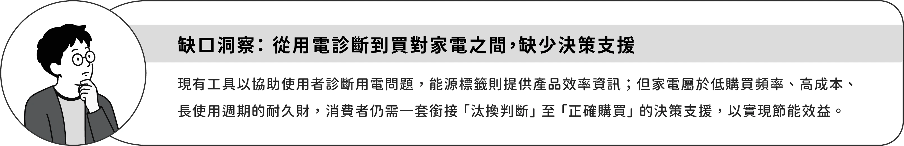
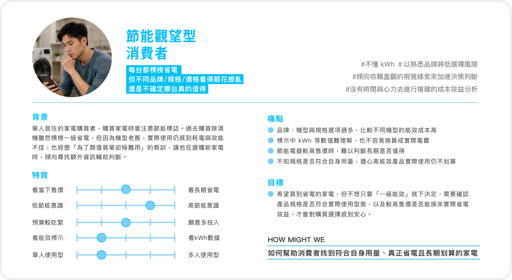
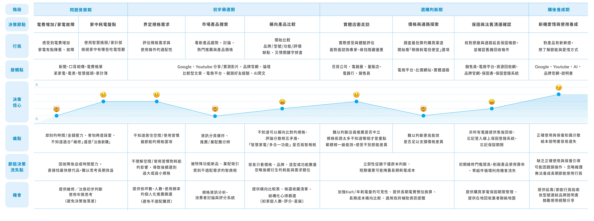
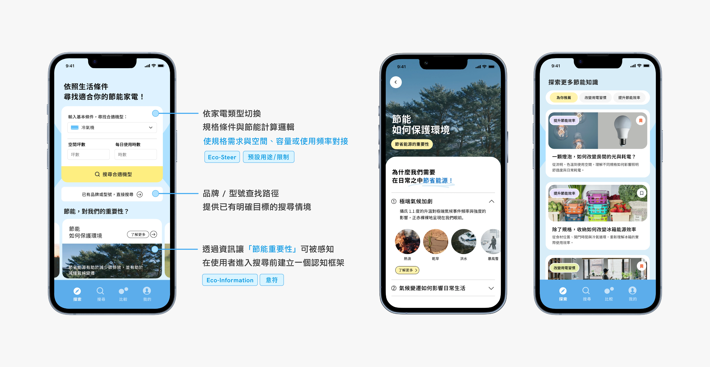
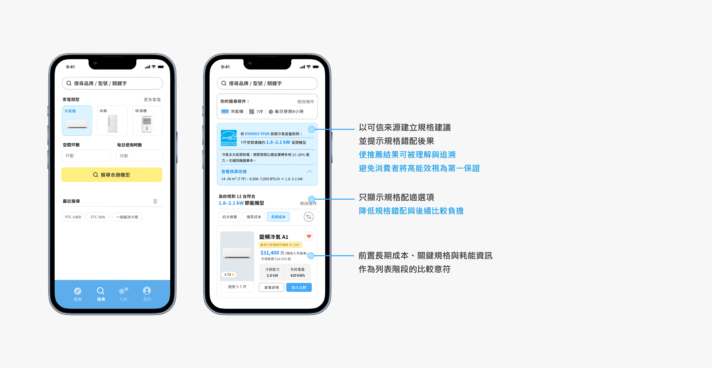
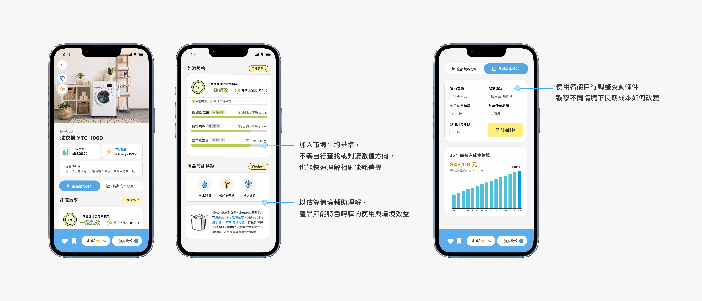
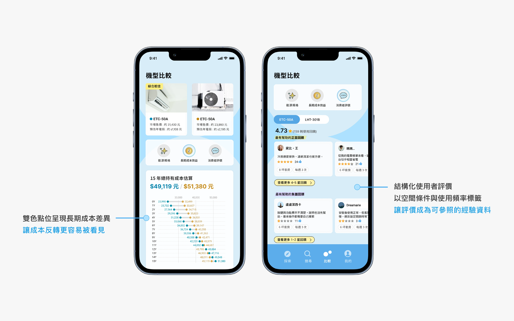
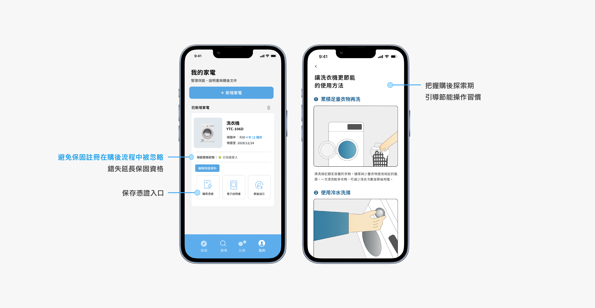

CONTEXT
為什麼從家電選購切入？
根據全球環境戰略研究所 (IGES) 與多家機構共同出版的 《1.5-Degree
Lifestyles》 報告，改變生活型態與消費模式是因應氣候變遷的重要解方之一。飲食、住宅、移動共占總生活碳足跡約 75%；且已開發國家的住宅領域若要達成 1.5°C
溫控目標，2030
年至少需減量 68%，2050 年更需達到
93%。
在住宅能源使用中，家電是民眾最容易接觸的能源設備；另一方面，家電汰換與選購也是「用電覺察」轉向「長期設備選擇」的關鍵節點。以台灣而言，113 年總電力消費為
2,838 億度，其中住宅部門 534 億度，占 18.8%，為僅次於工業的用電部門
，而家電設備效率改善則被視為住宅部門減量的關鍵 (黃韻勳，2018)。
觀察現有住宅節電工具，多已處理「用電可視化」與「設備耗能辨識」方向。如台電智慧電表與 App
協助使用者掌握整體用電變化；智慧插座可針對特定設備進行耗電監測；經濟部家庭電器家計簿則透過設備類型、使用年限與能效條件，協助民眾辨識家中可能高耗能、低效率或應優先汰換的設備。
這些工具協助使用者逐步從「總電費」轉變為理解設備耗能，形成初步節電與舊電器汰換意識。然而，家電選購是低頻且長週期的決策節點；當規格與能效一旦選定，將影響後續
5-10 年以上的長期用電條件。
但當消費者真正進入新家電選購階段時，現有政策主要以補助與能效標示降低初步篩選門檻，卻較少回應消費者在實際選購時，面對售價、功能、能效與生活需求交織下的取捨困難。 換言之，住宅節能並非只發生於家電使用行為，而是從消費決策開始就已經形成。因此，設計機會不在於增加額外輔助資訊，而在於將既有節能資訊轉譯為可理解、可比較的購買判斷。


RESEARCH
桌面研究
為了理解節能資訊如何進入家電選購判斷，進一步檢視消費者能源標籤認知、節能家電選購障礙等研究。發現選購困難並不只來自能源標示是否被理解，也來自售價、促銷、功能間的注意力競爭，以及生活需求與家電規格間的判斷落差。換言之，節能家電選購的困難，在於缺少能將分散資訊轉成比較依據的決策支持。
-
即時價格比長期成本更容易進入購買判斷
消費者雖然理解節能產品長期可降低未來電費，但在實際購買情境，容易受當前售價與促銷折扣影響，且當下售價通常比長期運行成本更直接可見。相較之下，未來電費效益需要額外推估，較難在購買當下形成明確的判斷依據 (Behavioural Insights Team, 2023)。
-
等級標示降低理解門檻，也壓縮耗能差異
面對複雜的能源標籤，直觀的等級或色彩梯度作為判斷捷徑，能協助消費者快速辨識產品能效；但也同時壓縮消費者比較 kWh、年耗電量與不同機型之間的實際耗能差異 (Behavioural Insights Team, 2023 ; He et al, 2022)。
-
高能效不是單一保證，規格仍需回到生活情境判斷
U.S. DOE 與 ENERGY STAR 選購指引指出，節能效果不只取決於能源標籤，當規格未能與坪數、容量需求或使用頻率對接時，節能效果仍可能在實際使用中被削弱。如：冷房能力若超出房間需求，會因快速降溫卻除濕不足而降低效率；洗衣機桶槽容量則須對應小量多次或大量集中的清洗習慣。
人物誌
人物誌依據桌面研究所歸納的三項判斷盲區，以及與少量親友的簡易問談，被設定為一名具備節能意願，但在實際選購中仍需權衡售價、能源標章、產品規格與生活需求的消費者。
在未進行深度訪談的限制下，利用 YouTube 平台中「家電推薦與選購」、「新屋族踩雷清單」等相關影片與
Podcast。藉由電器專家建議、消費者經驗分享與失敗吐槽，整理出不懂
kWh、依賴熟悉品牌、害怕買錯規格、難以判斷高單價是否值得等選購焦慮，作為人物誌背景、特質設定與後續顧客旅程圖的輔助依據。

顧客旅程地圖
從旅程圖洞察，發現節能家電的選購判斷，通常不是在單一平台中完成，而是在 YouTube 評測、品牌官網、電商頁面、論壇討論、Facebook 社團與實體通路之間來回拼湊。這些接觸點各自提供部分資訊，例如產品賣點、價格、評價、規格說明或使用經驗，卻很少協助消費者建立一套能將分散資訊轉化為連續判斷的路徑。
當冰箱、冷氣等高耗能家電一旦故障或效能下降， 便直接影響日常生活運作，使選購情境呈現 - 即時替換需求、高單價支出與低容錯壓力。在資訊分散且時間有限的條件下，換算長期成本與確認規格配適的難度提高，購買判斷便容易轉向轉向當下價格、品牌熟悉度與能效指標等較直觀的依據。

SOLUTION
專注「節能家電選購階段」的垂直型決策支援 App
由於既有智慧插座、家計簿等工具，已支援用電覺察與耗能辨識。因此，設計上不重複「問題覺察」階段，而是專注實際選購階段的決策支持，如協助判斷產品規格是否符合自身需求、協助理解能源標示與耗能數據、協助較低總持有成本的選購判斷、以及協助選購後的節能操作教育。
探索 ｜ 節能家電選購的第一個判斷入口

不同家電需要不同判斷邏輯，因此探索頁面以「家電類型」作為條件式搜尋入口，避免消費者一開始即被品牌、促銷干擾決策；並將較難判斷的冷房能力、容量、年耗電量等技術規格，轉化為坪數、使用時數、家庭需求等生活條件，使規格配適在選購流程一開始就被納入判斷，避免消費者尚未確認自身需求前，便將高能效視為單一保證。
入口下方資訊區塊不做商品推薦，而是透過環境圖像與節能議題，建立產品篩選前的節能價值感知。讓「消費」不只代表省錢或挑選商品，也能連結到能源使用、環境影響與日常選擇後果。並使「能效」在後續消費判斷中不只是比較中的數據項目，也成為一種與環境意識、生活責任和社會行動相關的選購理由。
搜尋 ｜ 建立規格建議與比較邊界

系統根據使用者輸入的生活條件，建立情境化規格建議區間，並透過可信資料來源與可追溯的能源換算依據，說明建議結果如何產生。使消費者在進入商品列表前，先掌握可被理解的比較邊界，避免後續判斷過早被品牌、售價或功能賣點帶入比較。
不以市場價格作為唯一判斷入口，透過重新配置商品卡片的資訊權重，將預估長期成本、關鍵規格、年耗電量與消費者評分前置為列表階段的比較線索。引導使用者在候選範圍中，關注「當下價格、未來使用成本、耗能差異與實際評價」之間的關係，形成初步選購判斷的比較場域。
產品資訊｜將能源規格轉化為成本與效益判斷

透過市場平均基準、條狀視覺比較與判讀提示，將能源因數、耗電功率與年耗電量轉化為可判讀的相對表現，協助使用者掌握目前機型與同類產品之間的能耗差異，降低技術規格的判讀負擔。
消費者可依實際成交價格、電價、每日使用時數與使用年限，模擬不同變因如何影響總持有成本，使成本判斷從商品標價，改以依自身購買條件與使用習慣動態調整。
比較｜將候選產品轉化為多準則選購判斷

比較頁將候選機型拆分為「能源規格、長期成本效益、消費者評價」三個面向，使用者不只依據價格、品牌或創新功能形成初步判斷，而能在候選範圍中同步比較能耗表現、長期成本變化與實際使用經驗。
消費者評價則結構化為可查詢的使用情境資料。透過附上空間條件、使用頻率、使用場景標籤，使用者可篩選與自身條件相近的回饋，使評價不再是主觀感受，而是可參照的經驗資料。
購後管理｜從一次性購買轉向長期維護

家電屬於低頻購買、高使用年限的產品。消費者完成購買後，保固證明、購買憑證、電子說明書與節能指引雖不會被頻繁使用，卻會在維修、保固申請或操作查詢時成為關鍵資訊。若忘記登錄申請，或資料文件分散存放，將增加日後查找成本，也可能使產品在仍具維護價值時，因資訊查找困難而延誤保固或維修處理。
介面透過集中管理購後資訊，降低資料遺失與查找成本，並提供電子說明書與節能指引，協助使用者維持正確操作，使家電的節能效益不只停留在一次性的購買結果，而能轉化為可被持續維護與延續的使用實踐。